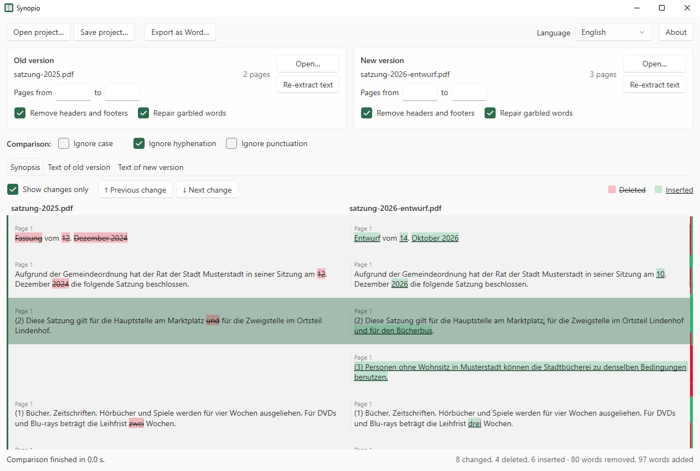
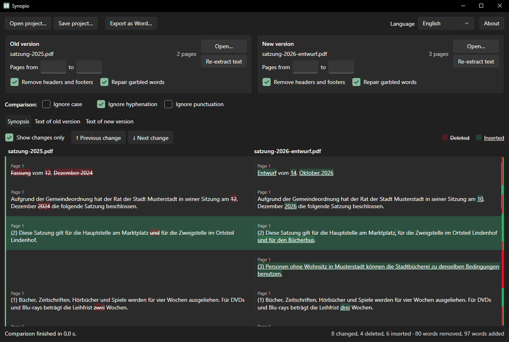

Synopio
A Windows app that compares two versions of a document and shows the differences side by side as a synopsis: deleted text is struck through on the left, inserted text is underlined on the right. It is made for drafts of laws, ordinances, reports and other long documents, where layout, line breaks and hyphenation differ between the versions while the content barely changes.
Work in progress: Synopio is at an early stage of development. Features, file formats and the user interface may still change.
Feedback and bug reports are welcome as issues. Not affiliated with or endorsed by Microsoft. Windows and Word are trademarks of the Microsoft group of companies.


Features
- Compares PDF, Word (DOCX), text and Markdown files, also across formats; Markdown is compared as plain text
- Removes running headers, footers and page numbers and joins hyphenated words, so layout differences are not reported as changes
- Repairs garbled words such as
Situa=onthat some PDFs contain instead ofSituation(see Repairing garbled words) - Compares only a page range, for example a report that is part of a larger attachment
- Lets you correct the extracted text by hand without changing the original files
- Marks the changes next to the scroll bar and jumps from change to change
- Exports the synopsis as a Word document
- Compares again automatically as soon as a file, a page range, an option or the corrected text changes
- No network access, no telemetry
Installation
Synopio needs Windows 11 and the .NET 10 Desktop Runtime. If the runtime is missing, Windows shows a hint with a download link when Synopio starts, and the installer points it out as well.
Download one of the files from Releases:
- Installer
Synopio-<version>-windows-x64-setup.exe– installs for the current user (default, no administrator rights) or for all users, adds a Start menu entry and optionally opens.synopioproject files with Synopio. It can be removed under Settings → Apps. - Portable
Synopio-<version>-windows-x64.zip– extract it to any folder and startSynopio.exe. Keep thelangfolder next to the program.
The program is not signed, so SmartScreen may warn on the first start: "More info" → "Run anyway". Each file has a .sha256 file to verify the download, and the release notes link a VirusTotal scan. Changes are listed in the changelog.
Installer parameters
The installer accepts the usual Inno Setup parameters, e.g. for a silent installation:
| Parameter | Effect |
|---|---|
/CURRENTUSER | Install for the current user only (default) |
/ALLUSERS | Install for all users (asks for administrator rights) |
/DIR="C:\Path" | Installation folder |
/SILENT, /VERYSILENT | Without wizard (with or without progress window) |
/SUPPRESSMSGBOXES | No message boxes in silent mode |
/TASKS="fileassociation,desktopicon" | Selected options; fileassociation opens .synopio project files with Synopio, desktopicon adds a desktop shortcut. Without the parameter, the file association is on and the desktop shortcut off |
/NOICONS | No Start menu entry |
/LOG="C:\Path\setup.log" | Write a log file |
Example: Synopio-0.1.0-windows-x64-setup.exe /VERYSILENT /SUPPRESSMSGBOXES /ALLUSERS /TASKS="fileassociation"
Settings such as the language or the window position are stored per user and are not set by the installer. Uninstalling removes the program and the file association but keeps the settings in %APPDATA%\Synopio and %LOCALAPPDATA%\Synopio.
Usage
- Open the old version on the left and the new version on the right, either with Open… or by dropping a file onto the panel.
- The comparison starts automatically and runs again after every change. Show changes only hides unchanged paragraphs, Previous change and Next change jump between differences. Red and green marks next to the scroll bar show where text was deleted or inserted.
- To compare only part of a document, enter the page range under Pages from … to ….
- Export as Word… saves the synopsis as a two-column table in landscape format. If Show changes only is active, only changed rows are exported.
- Save project… stores the files, page ranges, options and manual corrections in a
.synopiofile, so a comparison can be continued later. A project file can also be opened by passing it toSynopio.exe.
If the text of a PDF was extracted incorrectly, correct it on the tabs Text of old version and Text of new version. Paragraphs are separated by a blank line, a line such as [[12]] marks the start of page 12. The synopsis uses the corrected text, the original file stays unchanged. Re-extract text discards the corrections.
| Option | Effect |
|---|---|
| Ignore case | Satzung and SATZUNG count as equal |
| Ignore hyphenation | nordrhein-westfälisch and nordrheinwestfälisch count as equal (on by default) |
| Ignore punctuation | Commas, periods and other punctuation marks are not compared |
| Remove headers and footers | Lines that repeat at the top or bottom of many pages, and page numbers, are removed |
| Repair garbled words | See Repairing garbled words |
Repairing garbled words
Many fonts draw certain letter pairs such as fi, ft, tt or ti as one combined character, a so-called ligature. Some programs store these characters incorrectly when creating a PDF, so the extracted text contains Situa=on instead of Situation or Au>rag instead of Auftrag. Synopio recognizes such words, tries the usual letter pairs and keeps the one that results in a word occurring correctly in one of the two documents. It only changes a word if such a match exists.
Selected synopsis rows can be copied with Ctrl+C. About shows the version and the license and links to the project page. The Word export names Synopio and the version in the footer.
Synopio follows the light or dark mode of Windows and remembers the window size and position; if the screen it was on is no longer connected, it opens centered.
Languages
Synopio is available in English and German. With Automatic, it follows the Windows display language and falls back to English; LANGUAGES.md lists all languages.
The translations were generated by Claude (AI). If you notice a mistake or know a better wording, please open an issue or a pull request. The texts are plain text files in the lang folder, one key = text per line. Language files are read from the lang folder next to the program and from %APPDATA%\Synopio\lang; texts in the second folder take priority.
How it works
- Reading: PDF text is read with its position on the page using PdfPig. DOCX files are read directly from the document XML, text and Markdown files line by line.
- Preparing: Lines that repeat at the same place on many pages are removed as headers and footers. Garbled words are repaired with words that occur correctly in the same or the other document. Lines are joined into paragraphs using their spacing and markers such as
§,(1)ora), and hyphenated words are joined again. - Comparing: Both texts are split into words and punctuation marks. A difference algorithm first matches words that occur only once in both texts and then refines the gaps between them. Single matching words inside largely rewritten passages are discarded so that rewritten text appears as one block, and deleted or inserted blocks are aligned to paragraph boundaries. Typographic quotation marks and dashes count as equal to their simple forms.
- Synopsis: Paragraphs that share matching words are placed in one row, so a paragraph split into two still appears as one unchanged row. Paragraphs without a counterpart become rows that are only deleted or only inserted.
Privacy
- Synopio does not access the network. Nothing is downloaded or sent. The links under About open in the browser only when clicked.
- Documents are only read, Synopio never changes them.
- The selected language is stored in
%APPDATA%\Synopio\settings.json, the window size and position in%LOCALAPPDATA%\Synopio\window.json. - Project files (
.synopio) contain the paths of the compared files relative to the project file, their SHA-256 checksums, the page ranges, the options and, if present, the corrected text. Keep this in mind before passing on a project file.
License
Release packages and the installer include THIRD-PARTY-LICENSES.txt with the licenses of all third-party components built into Synopio.